Skills and Salary Dynamics in California’s Information Technology Data Analyst Market
The goal of this Data Analysis project is to understand the skill and salary dynamics of data analyst market in California
Created with Eskwelabs Group Team
Skills utilized: Python, Data Analysis, Pandas, Numpy, Data Cleaning
The Project Scenario
This study investigates the relationship between skills, salary, and geography within California’s Data Analyst job market to inform aspiring data analyst professionals in that state. Specifically, the research addresses the following questions:
- Which technical skills and strategic soft skills are most frequently required in California’s tech-sector Data Analyst postings?
- Are certain skills more prevalent in postings from specific California cities?
- Which specific skills — particularly those identified by the WEF as increasing in demand (e.g. data analytics, digital skills) — are associated with higher salary estimates in California?
- Are cities with more high-value skills (from Question 3) offering higher salaries?
Contents
- INTRODUCTION
- REVIEW OF RELATED LITERATURE
- DATA CLEANING
- STEP-1: IMPORTING PYTHON LIBRARIES
- STEP-2: IMPORTING THE DATASET
- STEP-3: EXPLORING DATASET
- STEP-4: CONVERSION OF DATASET COLUMNS
- STEP-5: SAVE DATASET 1ST VERSION
- STEP-6: EXPLORING DATASET AFTER CONVERSION
- STEP-7: REMOVING UNIMPORTANT COLUMNS AND VALUES
- STEP-8: SAVE DATASET 2ND VERSION
- STEP-9: LOAD AND EXPLORE DATASET
- STEP-10: RETAIN CERTAIN ROWS
- DATA CLEANING WITH NLP
- ANSWERING RESEARCH QUESTIONS
- CONCLUSION AND RECOMMENDATIONS
- REFERENCES
INTRODUCTION
The rapid digitalization of industries worldwide has placed data and artificial intelligence (AI) at the center of organizational strategy. According to the World Economic Forum’s 2025 Future of Jobs Report, demand for digital competencies, such as data analytics, AI, and machine learning, is accelerating as companies pursue automation and intelligent decision-making. This global shift reshapes workforce expectations and widens the value placed on specialized data skills.
California’s technology ecosystem, which includes Silicon Valley, San Diego’s biotech corridor, and the creative digital sectors of Los Angeles, offers a unique environment to examine these labor-market transformations. The state consistently ranks among the highest in job demand and wages for data-related roles, making it an ideal focus for analyzing how emerging skills influence Data Analyst opportunities.
California’s Information Technology sector presents an especially suitable case for studying the future of data-analytics jobs. The state’s tech sector accounts for a disproportionately large share of regional GDP and hosts intense concentrations of AI and analytics adoption — from Silicon Valley’s software and cloud firms to San Diego’s biotech analytics clusters and Los Angeles’s creative technology industries — yielding abundant, diverse job postings and pronounced wage dispersion (California Chamber; BLS/CA EDD). Given global forecasts that identify data and AI skills as central to near-term labor-market transformation (WEF Future of Jobs 2025) and evidence that AI readiness clusters geographically (Brookings; McKinsey), a California-focused analysis allows us to (a) measure skill prevalence in a leading adoption environment, (b) test how specific skills map to salary outcomes where pay premia are meaningful, and (c) probe city-level differences within a single regulatory and economic framework.
As organizations increasingly integrate advanced analytics and AI-driven workflows, the skills required in Data Analyst job openings become an important indicator of market trends. Technical competencies such as Python programming, SQL database management, and cloud platform experience have become foundational across industries. Similarly, strategic and analytical skills, like data storytelling and problem solving, remain highly valued to translate data into actionable insights.
Understanding how these skills correlate with salary is essential not only for job seekers and educators but also for policymakers aiming to ensure inclusive workforce development. Salary variations across cities may signal regional industry specialization, differing cost-of-living pressures, or varying levels of competition for data talent.
REVIEW OF RELATED LITERATURE
Global and U.S. Trends in Analytics and AI Jobs
The World Economic Forum (WEF) Future of Jobs Report 2025 forecasts that technological transformation — particularly AI, big data, and automation — will be a major driver of job creation through 2030. The report, based on a survey of over 1,000 companies, estimates a net gain of 78 million jobs globally by 2030, even after accounting for displacement.
SOURCE
Among the fastest-growing roles are big data specialists, AI/ML specialists, and data analytics-related roles. In the U.S. specifically, labor-market projections support this upward trend in data analytics disciplines: for example, the U.S. Bureau of Labor Statistics projects 34% employment growth for data scientists between 2024–2034, well above average for all occupations. This aligns with the WEF’s broader narrative that data and AI roles will drive future employment growth.
SOURCE
California’s tech sector remains large and influential
Compared to other states in the USA, California’s tech sector accounts for an exceptional share of state GDP and economic activity. The sector’s footprint produces large demand for data and analytics roles across subsectors (software, cloud services, media/creative tech).
SOURCE
Recent regional research highlights that AI readiness and digital assets are unequally distributed across metro areas (talent, innovation, adoption). Brookings’ “Mapping the AI economy” and similar regional studies show that metro-level AI readiness correlates to talent demand and specialized job creation — precisely the logic behind comparing San Francisco, Silicon Valley, Los Angeles, San Diego, and other CA tech hubs.
SOURCE
There are regional wage differentials California tech hubs
Salary differentials exist, even within dominant markets like California. An ADP Research Institute study summarized by SFGate documents a Bay Area tech pay premium, noting that in the San Jose–San Francisco–Oakland corridor, roughly 1 in 48 jobs pays more than $500,000 annually—several times the national share—largely driven by high-compensation technology firms.
SOURCE
These findings empirically ground the expectation that California’s leading tech hubs will exhibit both higher overall wages and sharper wage stratification for data-intensive occupations.
Skills premiums exist for AI and advanced analytics competencies
Recent labor-market analyses show that advanced AI and analytics skills now carry clear wage premiums in data-related roles. A 2025 Lightcast report finds that U.S. job postings requesting AI skills offer on average a 28% salary premium compared with otherwise similar roles that do not list AI skills.
SOURCE
Complementing this, a 365 Data Science analysis of 1,355 U.S. Data Analyst job ads shows strong demand for SQL (in over two-thirds of postings), data visualization tools like Tableau and Power BI, and statistics, alongside evidence of substantial salary growth—with average advertised analyst pay increasing by roughly 20,000 USD between 2024 and 2025 to reach $111,000.
SOURCE
Together, these studies support the interpretation of specific AI and analytics skills as wage-enhancing signals in the tech labor market.
DATA CLEANING
STEP-1: IMPORTING PYTHON LIBRARIES
Our data cleaning process began with importing several Python libraries commonly used for data analysis and visualization, such as pandas, numpy, and seaborn. Following this, the initial dataset was uploaded.
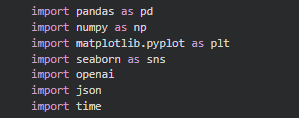
STEP-2: IMPORTING THE DATASET
The initial dataset we used named "DataAnalyst.csv" contained 2253 rows and 16 columns of job posting information. It includes details on job titles, salary estimates, job descriptions, and various attributes like size, sector, and revenue. The dataset has a mix of numerical and object (string) data types.
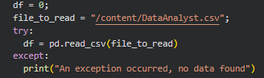
STEP-3: EXPLORING DATASET
Using head() to return 2 rows.
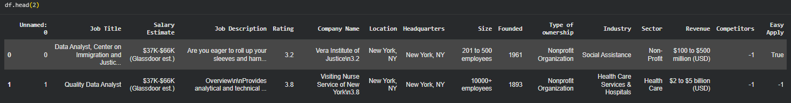
Using shape() to return number of rows and columns
Using info() to return information on rows and columns
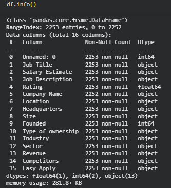
STEP-4: CONVERSION OF DATASET COLUMNS
Column names of the initial dataset were converted to lowercase, and leading/trailing whitespaces were removed.
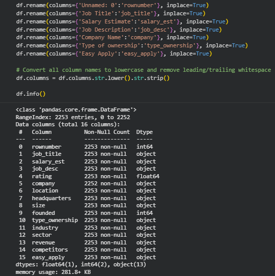
STEP-5: SAVE DATASET 1ST VERSION
This was then saved to a new file titled "dataAnalyst_cleanedv1_group2.csv" before further processing.
Further processing was then performed on the most recent version of the csv file.
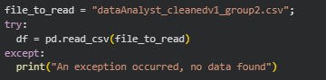
STEP-6: EXPLORING DATASET AFTER CONVERSION
Using head() to return 2 rows.
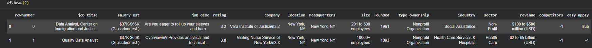
Using shape() to return number of rows and columns
Using describe() to return description of the data
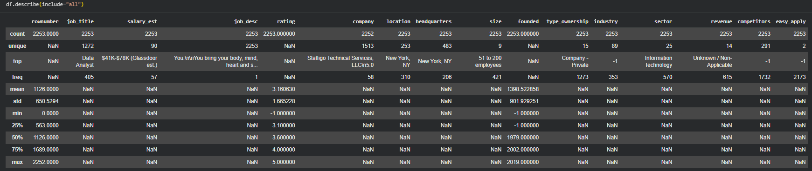
STEP-7: REMOVING UNIMPORTANT COLUMNS AND VALUES
Columns not needed in the analysis such as "rownumber", "headquarters" and "easy_apply" were dropped.
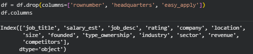
We noticed plenty of "-1" values scattered throughout the spreadsheet. These values were replaced with null values so as to standardize how the missing data is represented.
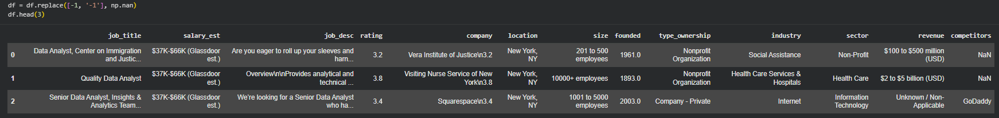
A number of substrings under a few columns were also dropped to make the data much cleaner prior to analysis.
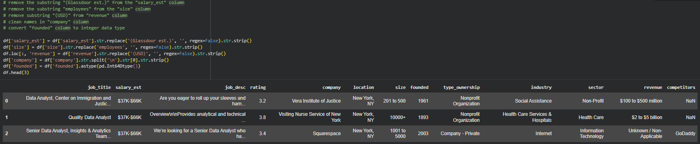
STEP-8: SAVE DATASET 2ND VERSION
The csv file was then saved into a newer version prior to the use of natural language processing using nltk.
STEP-9: LOAD AND EXPLORE DATASET
LOADING THE DATASET
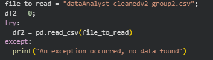
EXPLORING THE DATASET
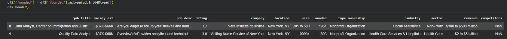
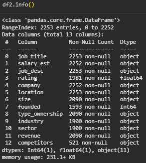
STEP-10: RETAIN CERTAIN ROWS
We also made sure to retain only the rows with values "CA" under the "state" column since the focus of our project was on the state of California.
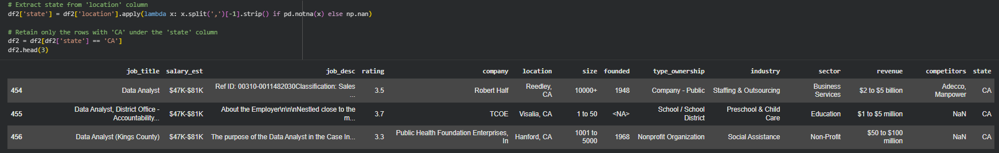
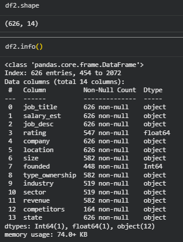
The df2 DataFrame currently contains 626 entries and 21 columns, focusing exclusively on Data Analyst job postings within California. Columns removed from the original DataFrame (df) include rownumber, headquarters, and easy_apply. New columns added to df2 are state, city
DATA CLEANING WITH NATURAL LANGUAGE PROCESSING (NLP)
STEP-1: IMPORT LIBRARIES
This following code cell imports essential libraries for Natural Language Processing (NLP). These tools allow for text preprocessing, such as removing common words, and reducing words to their base forms.
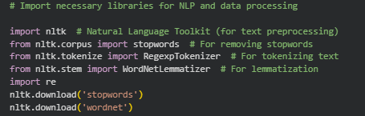
STEP-2: PROCESS JOB DESCRIPTION COLUMN
The following code defines a clean_text function to preprocess job descriptions by ensuring text is a string and replacing newlines with spaces. It then tokenizes the text, converts it to lowercase, removes stopwords, and filters out numeric tokens. Finally, this function is applied to the 'job_desc' column, creating a new 'cleaned_job_desc' column.
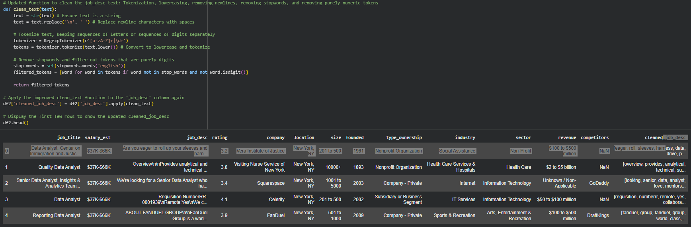
STEP-3: USING LEMMATIZER
This code initializes a Lemmatizer to reduce words to their base forms, for better analysis. It then applies this lemmatization process to the cleaned_job_desc column, creating a new lemmatized_job_desc column.
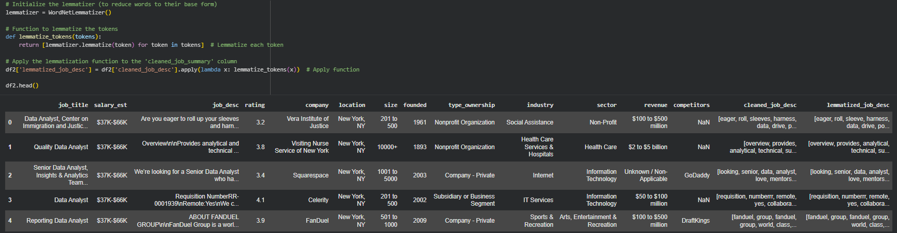
STEP-4: COUNTING TECHNICAL AND SOFT SKILLS COLUMNS
This code extracts and counts specific technical and soft skills from job descriptions using predefined lists. It applies a function to identify single and multi-word skills within lemmatized text, then tallies their occurrences across the dataset to reveal skill prevalence.
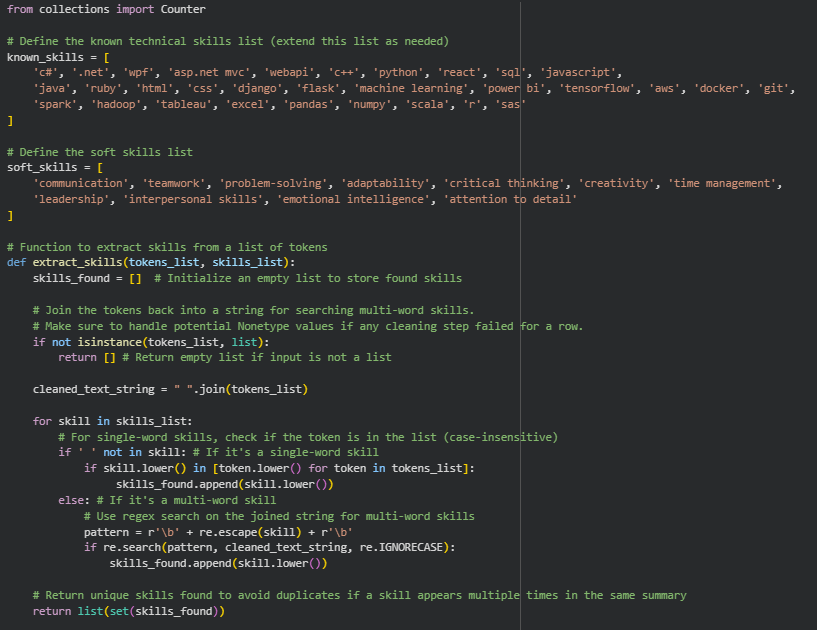
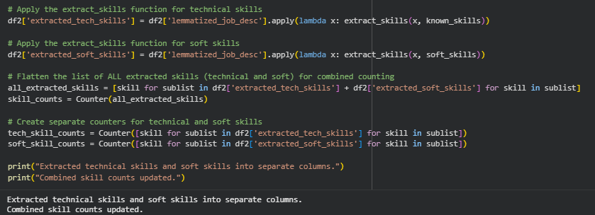
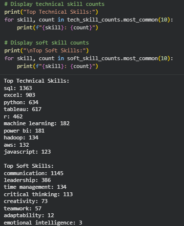
STEP-5: EXTRACTING COMPUTATIONS FOR SALARY COLUMNS
Finally, thus code defines a function parse_salary that extracts the minimum, maximum, and average salary from the salary_est column. This will be used for easier numerical analysis of the salary estimates.
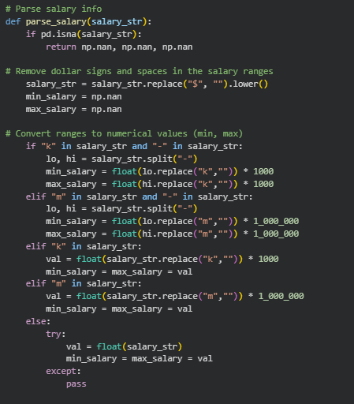
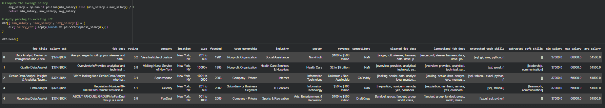
New columns added after nlp and some more processing include cleaned_job_desc, lemmatized_job_desc, extracted_tech_skills, extracted_soft_skills, min_salary, max_salary, and avg_salary for a more enriched analysis.
ANSWERING RESEARCH QUESTIONS
We will now be answering the 4 research questions.
1. Which technical skills and strategic soft skills are most frequently required in California’s Information Technology sector Data Analyst postings?
We want to first establish the foundational skill landscape in the Information Technology sector in California. This serves as our baseline understanding before exploring the different cities within California and the value of these skills.
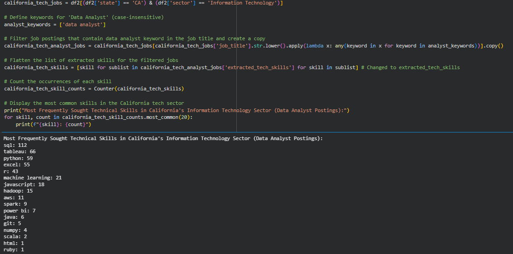
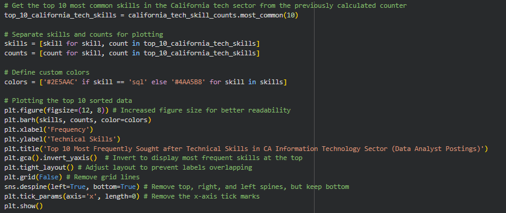
CHART:
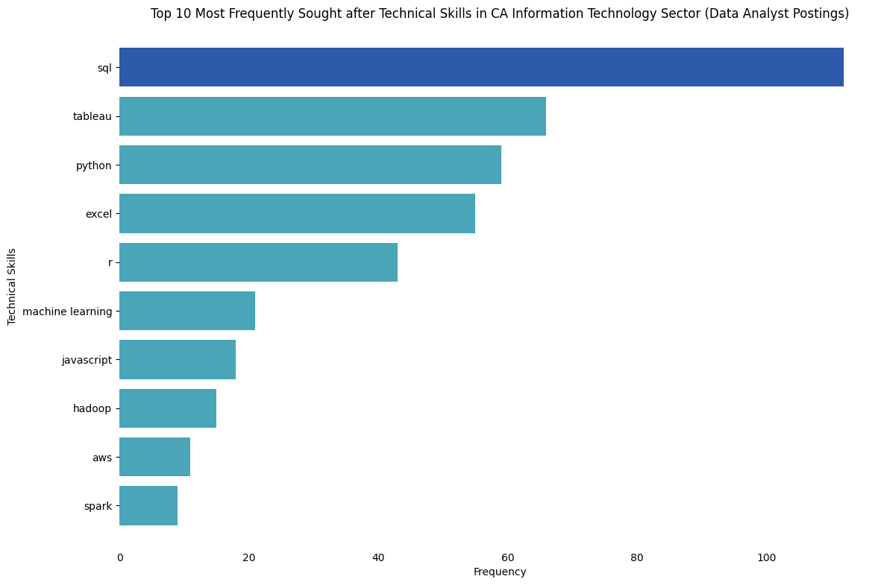
- SQL appears more frequently in postings, indicating it as a backbone of technical competency
- Tableau, Python, Excel, and R form a "mid-level technical stack", implying that analysts are expected to be competent in querying, visualization, and even scripting
- Machine learning does not appear as frequently, meaning it is not a baseline expectation
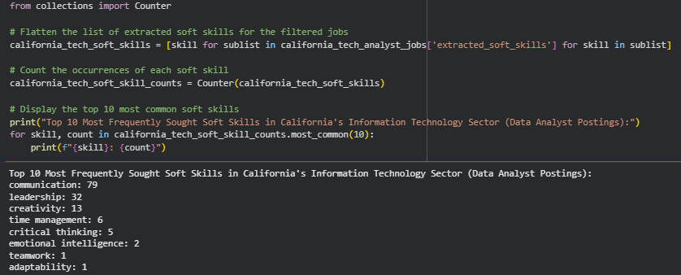
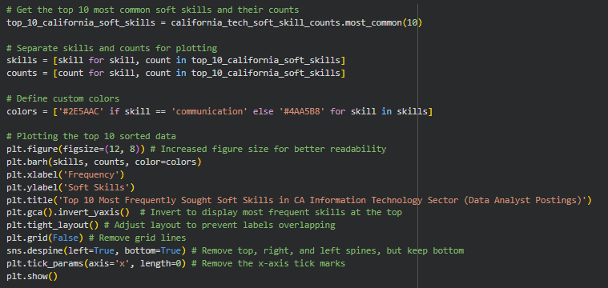
CHART:
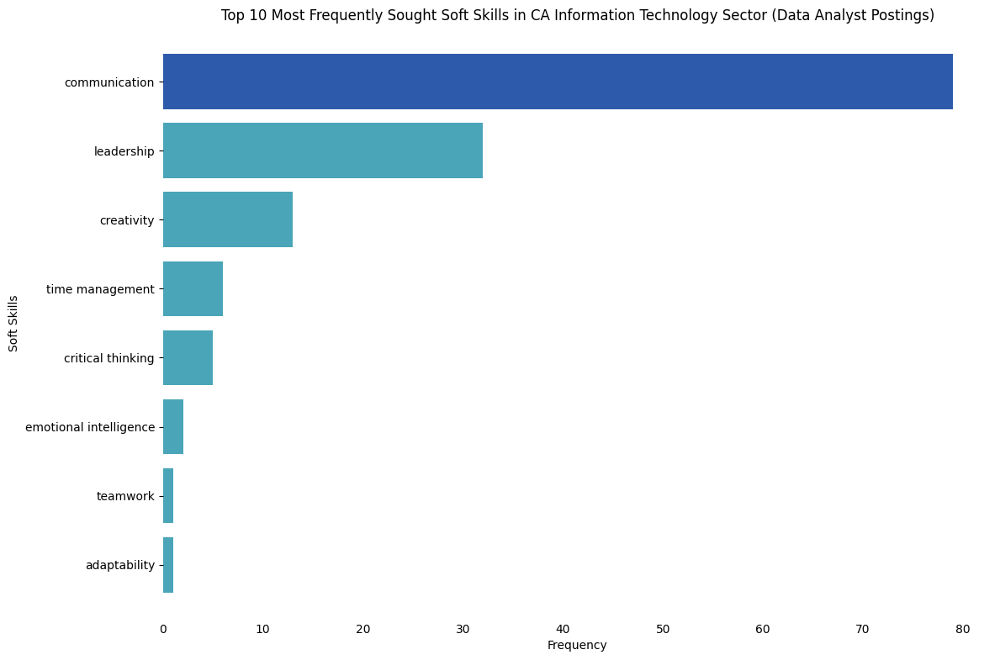
- Communication is the dominant soft skill, reinforcing the idea of analysts as collaborators and storytellers
- Leadership appears frequently for an analyst role, suggesting that analysts must drive initiative
- Creativity ranks higher than traditional soft skills like critical thinking and time management, a preference for creative problem solving and experimentation.
2. Are certain skills more prevalent in postings from specific California cities?
We then examine how the landscape of skills varies across the state’s major cities. This connects to question 1 by transitioning from asking “what skills exist” to “where they cluster.”
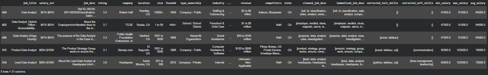
We extracted the city names from the 'location' column, this step will allow us to aggregate by city in the next steps.
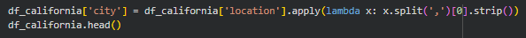
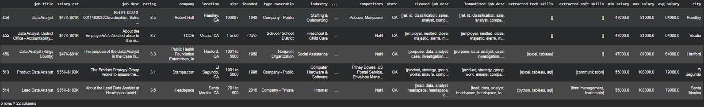
To aggregate all 'extracted_skills' by city, we first group the DataFrame by the newly created 'city' column. Then, we sum up the lists of skills for each city.
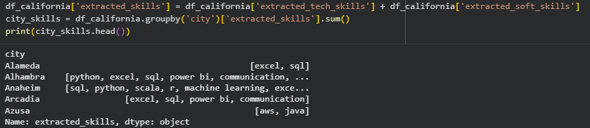
Now that the extracted_skills column has been created and aggregated by city, we counted the occurrences of each unique skill within the aggregated list for each city. This will provide the frequency of each skill in California cities.
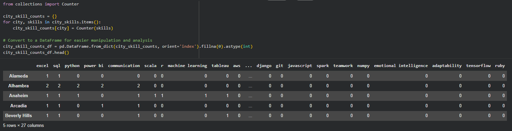
To visualize the skill commonality across California cities, we identified the top N cities based on the total number of skills mentioned. Then, for each of these top cities, we extracted their most prevalent skills.
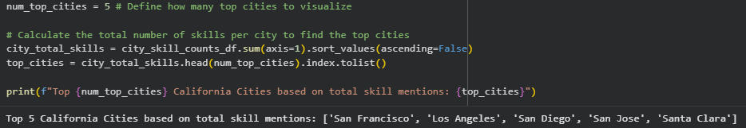
To calculate the number of job postings for each city, we grouped the df_california DataFrame by the 'city' column and use .size() to count the occurrences of each city, storing the result in job_postings_by_city.
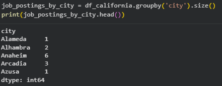
Now that the job postings by city have been calculated, we filtered job_postings_by_city Series to include only the previously identified top_cities (San Francisco, Los Angeles, San Diego, San Jose, Santa Clara) and then visualize these counts using a bar chart.
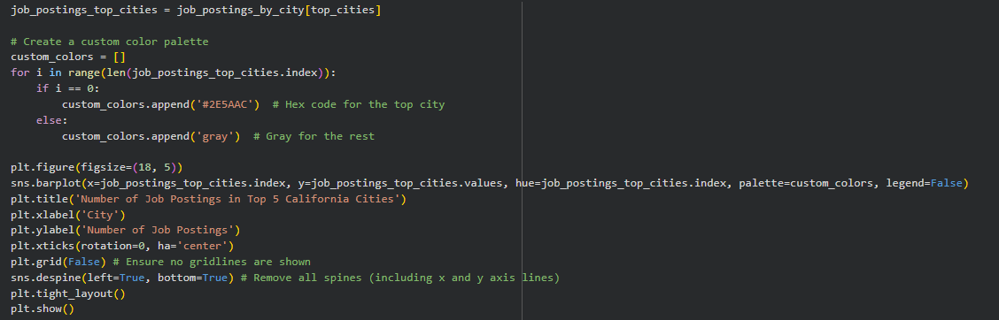
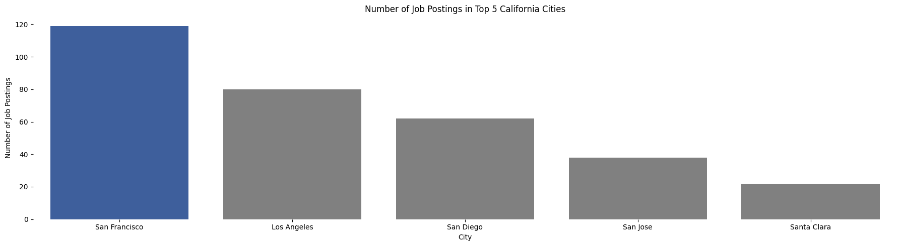
The chart clearly shows that San Francisco leads by a significant margin in the number of Data Analyst job postings among the top 5 California cities, with 119 postings. Los Angeles follows with 80, and San Diego has 62. San Jose and Santa Clara have fewer postings at 38 and 22, respectively. This indicates a strong concentration of demand for Data Analysts in the San Francisco Bay Area, especially within San Francisco itself.
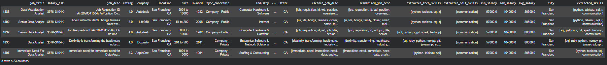
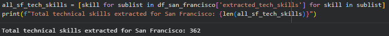
The chart showcasing the top 10 technical skills in San Francisco Data Analyst job postings reveals several key insights:
- SQL, Tableau, and Python are the undisputed top three technical skills, with SQL leading significantly (95 mentions). This highlights their foundational importance in the San Francisco tech data analyst market.
- Excel and R also maintain strong demand, indicating that data analysts are expected to be proficient in both general data manipulation and statistical programming.
- More advanced or specialized skills like Machine Learning, Hadoop, Git, Spark, and JavaScript appear with much lower frequencies, suggesting they are valued but not as universally required as the core data analysis tools. This could imply that while these skills are beneficial, they might be sought after for more niche roles or advanced positions within the Data Analyst spectrum in San Francisco.
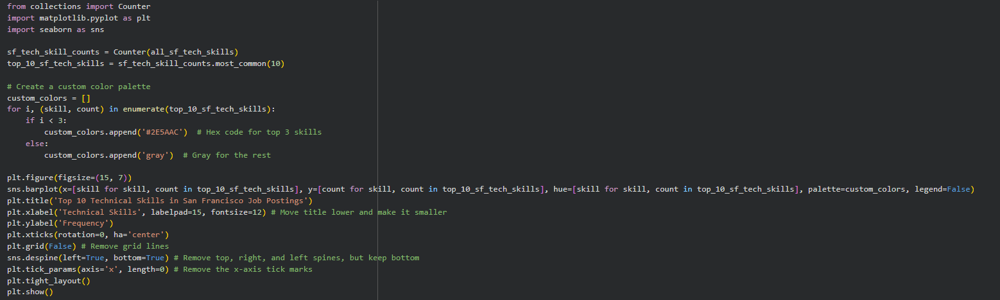
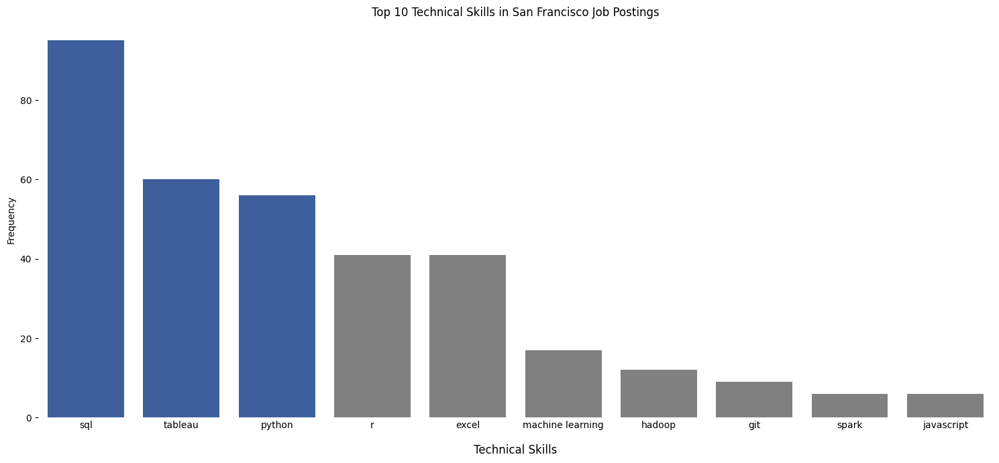
The chart illustrates the prevalence of soft skills in San Francisco Data Analyst job postings:
- Communication is the overwhelmingly dominant soft skill, with 73 mentions, significantly higher than any other skill. This reinforces its critical importance for Data Analysts in San Francisco, suggesting employers highly value the ability to articulate findings and collaborate effectively.
- Leadership is the second most sought-after soft skill with 27 mentions, indicating that analysts are often expected to take initiative, guide projects, or influence decision-making.
- Other soft skills like creativity, teamwork, time management, emotional intelligence, critical thinking, and adaptability appear with very low frequencies (1 or 2 mentions). This suggests that while these skills might be beneficial, they are not as explicitly or commonly requested in job descriptions as communication and leadership in this specific market.
3. Which specific skills — particularly those identified by the WEF as increasing in demand (e.g. data analytics, digital skills) — are associated with higher salary estimates in California?
Next, we wanted to evaluate which skills actually create value within the California job market, tying the analysis to WEF’s future-of-work indicators on rising skill demand.
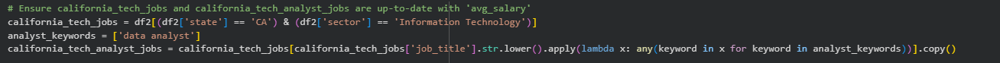
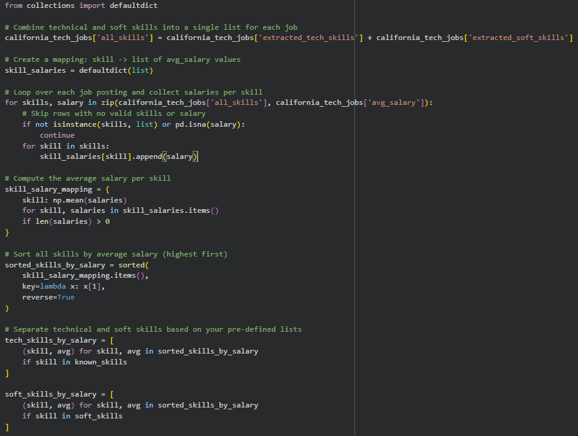
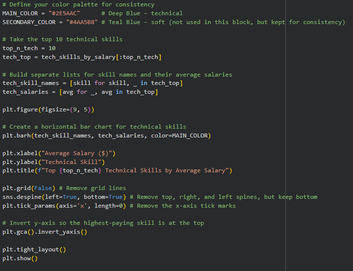
CHART:
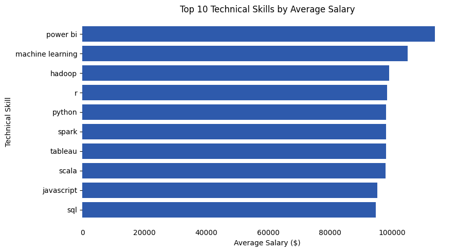
- Power BI (USD 113,812.50) and Machine Learning (USD 105,000.00) top the list, showing employers pay the most for advanced analytical and AI skills.
- Big-data tools like Hadoop (USD 99,029.41) and Spark (USD 98,136.36) also rank high, which lines up with the WEF’s emphasis on technological literacy and data fluency.
- Python (USD 98,173.91) and R (USD 98,448.98) earn solid but not top salaries, showing they are essential baseline tools rather than rare, high-value specialties.
- JavaScript (USD 95,194.44) and SQL (USD 94,768.00) fall toward the bottom, showing that more common programming and querying skills do not earn as much because they are widely available.
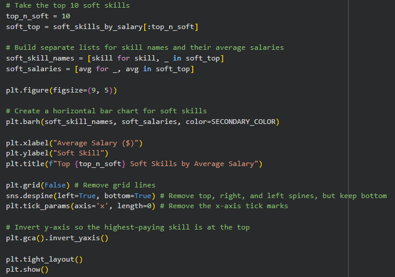
CHART:
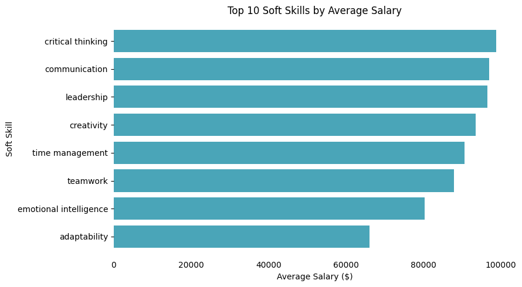
- Critical thinking is the highest-paid soft skill (USD 98,833.33), aligning with the WEF’s #1 core skill: analytical thinking.
- Communication (USD 96,994.68) and leadership (USD 96,500.00) command strong salaries, echoing the WEF’s ranking of leadership & social influence and active listening as top workforce priorities.
- Creativity (USD 93,500.00) is also well-rewarded, supporting the WEF’s idea that creative thinking will be essential in a tech-driven world.
- Teamwork (USD 87,875.00) and emotional intelligence (USD 80,250.00) earn mid-range salaries, showing they matter but aren’t as heavily rewarded yet.
- Adaptability (USD 66,000.00) earns the least, even though the WEF ranks resilience/flexibility very high, meaning the value is recognized but not fully priced in.
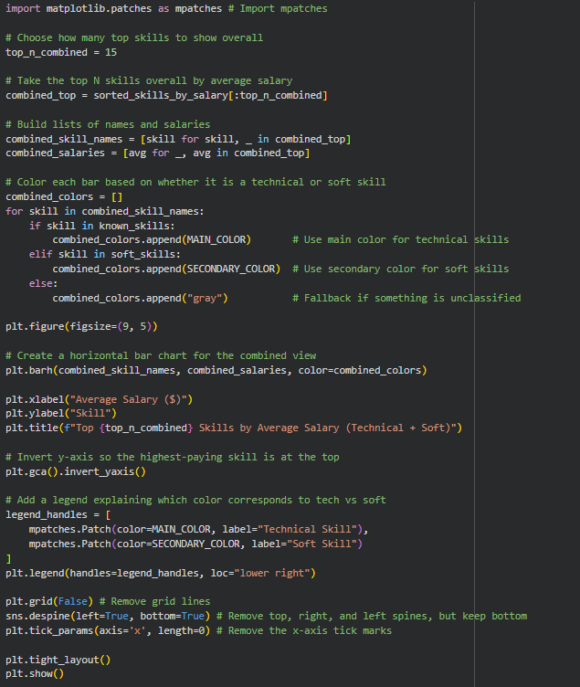
CHART:
- Technical specialties dominate the very top, especially Power BI, Machine Learning, and Hadoop, reinforcing the WEF’s point that AI and data-related skills are the biggest and fastest growing future differentiators.
- Critical thinking is the only soft skill ranking alongside top technical skills, reflecting the WEF’s claim that advanced thinking and analysis are the most important universal skills.
- Communication and leadership fall into the mid-range, showing employers prize these skills but still prioritize technical scarcity over interpersonal strengths—at least for now.
- The ranking overall supports a hybrid-skills model, where combining strong technical ability with strong thinking and communication skills creates the highest-value workers.
4. Are cities with more high-value skills (from Question 3) offering higher salaries?
Lastly, we assessed whether the location within California amplified the salary premium associated with high-value skills. We wanted to connect location (Question 2) with skill-driven value (Question 3).
CHART:
Filter and calculate average salaries for soft skills
Prepare data for soft skills plotting
CHART:
Data Analysis Key Findings
Average Salary Calculation: Average salaries for 'Power BI', 'Machine Learning', and 'Hadoop' were successfully calculated across 'San Francisco', 'Los Angeles', and 'San Diego'. This was achieved after resolving an initial KeyError by extracting city names from the 'location' column and creating a new 'city' column in the california_tech_analyst_jobs DataFrame.
CONCLUSION AND RECOMMENDATIONS
CONCLUSION
- Job Market Concentration in California: The visualization of job postings in the top 5 California cities (San Francisco, Los Angeles, San Diego, San Jose, and Santa Clara) clearly indicates a significant concentration of data analyst opportunities in these major metropolitan areas. San Francisco consistently appears as a leading hub, suggesting a vibrant tech and data-driven job market.
- High Demand for Core Technical Skills: In California, core technical skills such as SQL, Excel, and Python are overwhelmingly the most in-demand. These foundational skills are essential for almost any data analyst role, highlighting their universal applicability across various industries. More specialized skills like Tableau, Power BI, and R also show strong prevalence—and higher salary ranges—indicating a premium placed on data visualization and statistical analysis capabilities.
- Criticality of Soft Skills: Beyond technical expertise, soft skills like "communication" are highly valued in California job postings. The presence of other soft skills, though less frequent, suggests that employers seek well-rounded individuals who can effectively convey insights, collaborate, and adapt within dynamic work environments.
RECOMMENDATIONS
- Prioritize Foundational Skills for Job Seekers: Individuals aspiring to enter or advance in the data analyst field, particularly in California's competitive market, should rigorously develop their proficiency in SQL, Excel, and Python. These skills serve as a strong baseline for securing a wide range of positions.
- Invest in Data Visualization and Statistical Tools: To stand out, candidates should also focus on mastering data visualization tools like Tableau and Power BI, and statistical programming languages such as R. These capabilities enable analysts to not only process data but also to extract and present actionable insights effectively.
- Cultivate Strong Communication and interpersonal Abilities: Given the high demand for communication skills, data professionals should actively work on their ability to articulate complex findings clearly and concisely to diverse audiences. Participation in team projects, presentations, and cross-functional collaborations can help hone these crucial soft skills.
- Consider Geographical Specialization: While the top 5 cities offer numerous opportunities, job seekers could also explore the specific skill nuances within each city. Tailoring skill development and job applications to the prevalent demands of a particular city (e.g., more emphasis on certain tech stacks in Silicon Valley cities like San Jose or Santa Clara) could increase success rates.
- Continuous Learning and Adaptation: The rapidly evolving tech landscape necessitates continuous learning. Data analysts should regularly update their technical skill set and remain adaptable to new tools and methodologies to maintain competitiveness in these dynamic job markets.
REFERENCES
- https://cfce.calchamber.com/wp-content/uploads/2024/06/Tech-Sector-Shaping-CA-Economy.pdf
- https://www.brookings.edu/articles/mapping-the-ai-economy-which-regions-are-ready-for-the-next-technology-leap/?utm
- https://www.mckinsey.com/capabilities/quantumblack/our-insights/the-state-of-ai-in-2023-generative-ais-breakout-year
- https://www.mckinsey.com/capabilities/quantumblack/our-insights/the-state-of-ai-in-2023-generative-ais-breakout-year
- https://www.bls.gov/ooh/math/data-scientists.htm
- https://www.weforum.org/publications/the-future-of-jobs-report-2025/digest/